This example considers the application of the axisymmetric PVD equations introduced in a previous tutorial toward a time-dependent problem.
Problem description
The problem under consideration is a benchmark test using the method of manufactured solutions. Similar to the approach used in the previous tutorial, a solution in spherical symmetry is sought. The imposed displacment field is:
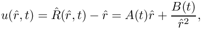
where the chosen time-dependence for
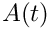
and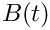
are:
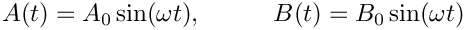
Using the same compressible Neo-Hookean constitutive law as previously, the body force required for the manufactured solution to be an exact solution is:
![\[
\mathbf{b} = -\left\{\omega^2 u +
\mu\left[\frac{\partial \lambda_{\hat{R}}}{\partial \hat{r}} + \frac{2}{\hat{r}}(\lambda_{\hat{R}}-\lambda_{\Theta})\right]
+ \frac{\lambda}{J\lambda_{\hat{R}}}\frac{\partial J}{\partial \hat{r}}
+ \left[\frac{1}{\lambda_{\hat{R}}^2}\frac{\partial\lambda_{\hat{R}}}{\partial \hat{r}} +
\frac{2}{\hat{r}}\left(\frac{1}{\lambda_{\Theta}}-\frac{1}{\lambda_{\hat{R}}}\right)\right]
(\mu-\lambda\log J)\right\}\mathbf{e}_{\hat{r}},
\ \ \ \ \ \ \ \ (1)
\]](form_4.png)
where
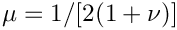
and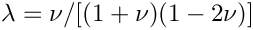
are the dimensionless Lamé parameters (other symbols retain their meaning from the previous tutorial). The required traction force on the inner and outer faces of the shell is:
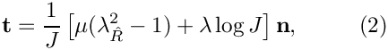
where is the unit normal.
Results
The predictions of the finite element simulation against the manufactured solution are shown below. An excellent agreement in the deformed inner and outer radii and is seen over the full oscillation period.
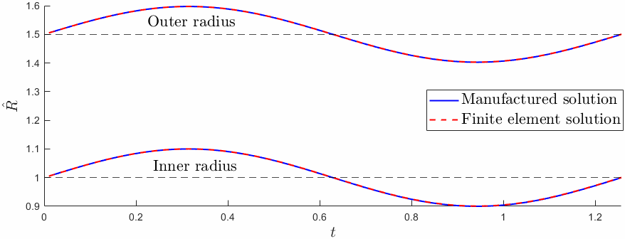
Also shown below are heatmaps of the components
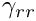
and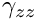
of the Green-Lagrange strain tensor: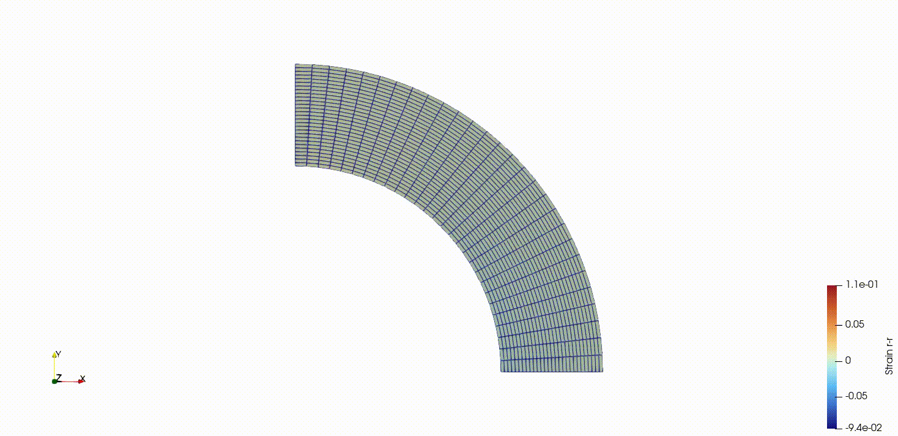
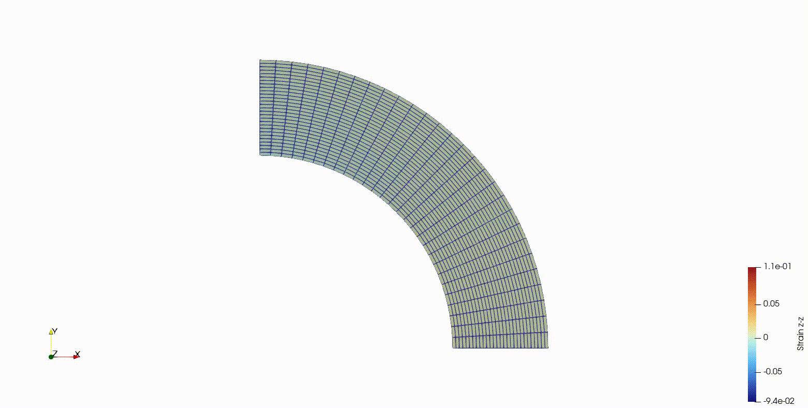
Global parameters and functions
The namespace GlobalPhysicalVariables contains the material's Poisson ratio and the parameters
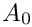
,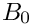
and that parameterise the manufactured displacement solution. The functions
that parameterise the manufactured displacement solution. The functions deformed_position_fct, deformed_velocity_fct and deformed_accel_fct are used to set the initial condition. The namespace also contains functions body_force_fct and traction_force_fct which define the forcing given by equations (1) and (2), respectively. A seperate namespace GlobalSimSettings then defines the simulation parameters such as the mesh dimensions, the number of timesteps in the run and the flag indicating if the solid pressure formulation is to be used.
The mesh
As done in the previous tutorial, the mesh is constructed by upgrading the existing TwoDAnnularMesh to a solid mesh.
The problem class
The problem class is relatively standard and is identical to the previous tutorial, execpt for the addition of the member functions set_initial_condition(), which sets the initial condition manually using functions provided in GlobalPhysicalVariables, and unsteady_run() which performs the time integration.
The problem constructor
The constructor begins with assigning the output directory and setting Newmark<1> as the problem's timestepper. Following this, the bulk and surface meshes are created and the member function create_boundary_elements() is called to create traction elements on the outer boundary of the shell. complete_problem_setup() (discussed below) is called to complete the setup of the bulk and surface elements and assign Dirichlet boundary conditions. set_initial_condition() (also discussed below) is called to manually set an initial condition which is consistent with the manufactured solution.
Completing the problem setup
To complete the problem setup, the pointers for the constutive law and body force function are passed to each of the bulk elements. The pointer to the traction force is then passed to each of the interface elements. Finally, the Dirichlet boundary conditions for the problem are set.
Setting the initial condition
Since this tutorial uses a manufactured solution, the nodal positions, velocities and accelerations are known at all times and so the initial condition can be set manually. The Newmark<1> timestepper stores the following values:
- 0: Displacement at time
 .
. - 1: Displacement at time
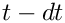
. - 2: Velocity at time .
- 3: Acceleration at time .
These values are easily accessible using the functions deformed_position_fct, deformed_velocity_fct and deformed_accel_fct in the namespace GlobalPhysicalVariables.
The driver code
The driver code is relatively simple. Command line arguments for the material's Poisson ratio and the use_solid_pressure flag are specified. Following this, the problem is built and solved by calling the member function unsteady_run, which simply perfoms the Newton solve and output within a timestepping loop.
Source files for this tutorial
- The source files for this tutorial are located in the directory:
demo_drivers/axisym_solid/shell_unsteady/ - The driver code is:
demo_drivers/axisym_solid/shell_unsteady/shell_unsteady.cc
PDF file
A pdf version of this document is available. \